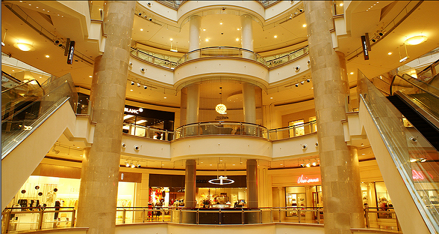

大型购物商场和百货公司
#台北101#
TAIPEI 101座落于台北市信义区，是台湾首座顶级国际购物中心，标高382公尺的89楼观景台，拥有全方位绝佳的观景视野，鸟瞰大台北美景，并可于88楼看到世界最大、最重、也是唯一外露供参观的风阻尼器。可购买国际精品、珠宝服饰配件、美妆保养、艺文、家居生活、美食及台湾特色礼物点心。

图：台北101购物中心
联络地址：台北市信义区信义路5段7号
联络电话：02-8101-8800
官方网站： www.taipei-101.com.tw
营业时间
周日~周四：11：00~21：30
周五、周六及国定假日前一日：11：00~22：00 （营业时间以网站公布为准）
服务信息：服务台提供外藉旅客退税、外币兑换、外文翻译等免费服务。设有投币式大型置物柜。
#远企购物中心#
远企购物中心位于绿树林荫的敦南大道上，是台湾首座结合商旅与办公大楼的美式购物商场，亦是台北市敦南商圈最大的购物中心。购物中心户外广场，不定期举办文创市集，无论是短暂驻足的商旅人士或时尚品味消费者，都能获得愉快的购物经验。可购买国际精品、珠宝服饰配件、美妆保养、艺文、家居生活、美食及台湾特色礼物点心。
联络地址：台北市大安区敦化南路2段203号
联络电话：02-2378-6666
官方网站：www.themall.com.tw
营业时间
周四~周一：11：00~21：30
假日：11：00~22：00 （营业时间以网站公布为准）
服务信息：提供旅客退税、外币兑换、宅配、叫车等多项服务。

图：远企购物中心
#Neo 19#
位于台北信义商圈的Neo19是以独家美食与健身娱乐为要求的主题复合商场，进驻店家多为旗舰店或全新概念店，游走于购物中心如同走逛时尚大街，是年轻族群背包客来台必游挖宝购物新天地。
可购买品项：饮食、运动、娱乐、休闲
联络地址：台北巿松寿路22号
店家分布：台北巿
联络电话：02- 2345-8819
营业时间：各门市营业时间不同
官方网站：www.neo19.com.tw
图：Neo19
#ATT 4 FUN#
ATT 4 FUN结合时尚、文创、娱乐活动、美食四大特色，满足消费者吃、喝、玩、乐及购物的时尚商场，不定期举办明星演艺活动，是哈韩族及哈日族追星的重要据点。
购买品项：时尚精品、潮流衣饰、美食、娱乐。
联络地址：台北市松寿路12号
联络电话：0800-065-888
官方网站：www.att4fun.com.tw
营业时间
百货商场：10：00~22：00
轻食步道：07：00~02：00 （营业时间以网站公布为准）
服务信息：提供免费停车、叫车、婴儿车等多项服务。提供外藉旅客退税及兑换外币服务。
图：ATT 4 FUN
#明曜百货#
明曜百货位于人潮汇集的台北东区，明亮的外观与时尚装潢，是东区的流行地标。以优质购物空间与特色品牌服务，满足来自国内外的顾客，带给每位顾客难忘的消费旅游体验。
可购买品项：运动用品、美妆、服饰、生活用品、亲子教育娱乐、美食。
联络地址：台北市忠孝东路4段200号
联络电话：0800-211-606
营业时间
周日~周四：11：00～21：30
周五~周六及假日前一天：11：00~22：00
服务信息
停车场开放时间：周一~周日10：00~21：30。
提供购物咨询、外币兑换、退税、婴儿车租借等服务。
图：明曜百货
#Q square 京站时尚广场#
Q square京站时尚广场位处台北转运站，拥有便捷的交通网络，包含台铁、高铁、捷运、机场捷运、国道客运等交通服务，同时结合旅馆、影城与健身俱乐部，堪称台北西区购物休闲娱乐新地标！
可购买品项：流行时尚、精品百货、休闲娱乐、美食广场。
联络地址：台北市大同区承德路一段一号
联络电话：02-2182-8888，0800-880-058
营业时间
平日（周一至周四）及例假日：11：00~21：30
例假日前一日（周五、周六）：11：00~22：00
服务信息：提供外籍旅客退税服务，网站尚有中、简体、日文及英文的退税说明。除4F与B3F外，其余楼层皆设有电子置物柜。B3F设有冷藏置物柜。为自行车友特设有单车停放架（需自备脚踏车锁）与小折寄车柜及淋浴区。
图：Q square京站时尚广场
#统一时代百货#
位处信义计划区的交通枢纽，提供便捷交通的统一时代百货，引进国际精品百货、服饰、运动休闲用品、3C家电等产品，满足消费购物需求，亦是一处人气婚纱外拍必访景点。
可购买品项：百货、精品、珠宝、女装服饰、生活家电、3C、流行运动及休闲用品。
联络地址：台北市忠孝东路5段8号
联络电话：02-2729-9699
营业时间
周日~周四：11：00~21：30
周五、周六、假日前：11：00~22：00
服务信息：外币兑换：美金、欧元、港币、日币、人民币。外籍顾客退税服务、小额退税服务。置物柜服务。休息区、免治马桶、免费购物袋等设施。
图：统一时代百货
商铺市集和主题购物街
#台北-光华商场（3C）#
光华数字新天地商品包罗万象，包含计算机及接口设备、光盘、电子零件、音响器材、电玩软件、视听产品与书籍等购物服务。商品样式多，堪称全台最大3C产品购物商场，无论是计算机新手、网络达人或是音响爱好者都能一次购齐所需商品。
可购买品项：计算机及外围软件硬件商品、通讯器材、音响光盘、电玩游戏、手机、摄影、相机、相关书籍或耗材
店家分布：台北市市民大道3段及八德路1段
光华数字新天地24H服务专线： 02-2391-7105、02-2341-2202
官方网站：www.gh3c.com.tw
营业时间：详细营业时间，请查询网站。
图：光华数字新天地
#台北-内湖花市#
台北内湖花市是全台湾规模最大的花卉批发交易市场，有着如花朵般亮丽的外观并以空桥连接A、B二座馆区。
内湖花市兼有批发和零售及海外营销，是台北所有花店的货源，各式奇花异草、当季或世界各地的花材，消费者可以一次购足所需花材；而且，还结合美食、休闲、花卉教育等功能，是一个多功能的国际花卉城，也是认识花卉及怡情养性的休闲好去处。
可购买品项：切花、盆花、资材、肥料、花束、饮食
联络地址：台北市内湖区新湖三路28号、36号
联络电话：02-2790-9729
官方网站：www.tflower.com.tw
营业时间：04：00~12：00 （花市每月休市日及营业时间请依官方网站公告为准）
图：内湖花市
#台北-建国假日花市/玉市#
「建国假日花市、玉市」位于信义路及济南路之间的建国南路高架桥下，每逢周末假日以市集型态出现，以仁爱路为界，以南为花市，以北则为玉市。鲜花、盆栽苗木多由花农产地直销，是采买花卉植物和赏花休闲的好去处。建国玉市聚集近千个玉器摊位，也是一处购买玉石的购物天地。
可购买品项：盆栽、花卉、资材、玉石、饰品
联络地址：台北市建国高架桥下桥段-信义路与仁爱路间
官方网站：www.fafa.org.tw
营业时间：每星期六、星期日：09：00~18：00
交通信息：搭乘台北捷运红线，于大安森林公园站步行前往
服务信息：玉石协进会在靠近济南路的入口处设有服务台，购买的玉石皆可请他们帮忙鉴定，一旦与摊商发生买卖纠纷，他们也会帮忙调解。不定期举办各项讲座与展览，请查询网站。
图：建国假日花市、玉市
#西门町商圈#
西门町位于台北市万华区成都路、康定路、汉口街和中华路所构成的街区，是台北著名的流行商圈，无论吃喝玩乐，各种流行时尚一应俱全，也让西门町商圈成为观光必游购物景点。
可购买品项：流行服饰、个人用品、百货、3C影音、电影表演艺术、食品
联络地址：台北市万华区中华路1段
官方网站：台北-西门町商圈官方网站
捷运：捷运五号线（蓝线）于「西门站」6号出口。
图：西门町商圈
#松山文创园区#
松山文化创意园区位于台北市信义区，园区中有各式文创商店、艺品店、餐饮等，供消费者尽情参观选购，而古老烟场中的巴洛克式庭园、生态水池，在繁华市区如同珍贵的绿洲，提供顾客幽静古雅的休闲环境。
可购买品项：艺术精品、设计师作品、创意生活用品及文具、3C创意作品、食品餐饮
地址：台北市信义区光复南路133号
联络电话：02-2765-1388
官方网站：www.songshanculturalpark.org
营业时间
园区内室内区：09：00~18：00
园区内室外区：08：00~22：00
园区外24小时开放 （请查询网站公布为准）
交通信息
捷运：板南线，国父纪念馆站5号出口，步行约10分钟可抵达。
服务信息：园区附设服务中心，提供集乳、饮水、置物柜及大型行李寄放、轮椅、婴儿车、游客休息区等服务。园区附设台北文创大楼，集合诚品书局、复合式卖场及办公室、文创旅店。
图：松山文化创意园
#华山1914文化创意产业园区#
由台北酒厂迁厂改装的华山1914创意文化园区，园区内拥有多家创意设计品的展售商店，由旧厂房改建的大小展厅也提供给艺文界、非营利团体与表演团体使用，让原本古朴的旧建筑，摇身成为台北市的文艺时尚新亮点。
可购买品项：书籍、音乐、文创艺品、休闲运动、观光纪念品、饮食
联络地址：台北市中正区八德路1段1号
联络电话：02-2358-1914
营业时间
户外空间24小时
管理处洽公时间：周一至周五09：00~18：00 （室内则由各店家公告时间开放）
交通信息
捷运：中和新芦线，忠孝新生站1号出口，步行3-5分钟即可抵达。
板南线，善导寺站6号出口，步行5-10分钟即可抵达。
服务信息：免费假日定时导览（每周六日下午四时）、置物柜借用、WIFI、集乳室、失物招领等服务。
图：华山1914创意文化园区
本地品牌
有很多台湾的面膜都是游客购物名单中的第一名，台湾产的美丽日记以及森田药妆面膜，在屈臣氏、普通化妆品店或者机场就可以买到。此外，还有以下品牌：
#PHANTACI#
这家店是由周杰伦与好友 Ric 所共同设立，他们各自发挥不同领域的专长，由杰伦提出概念，以 Fantasy 与 Phantom 之名，结合打造出PHANTACI 一词，以缤纷多元化的流行概念，带给消费者不同的感观，其在短时间内已成为台北的重要潮流店铺之一。
地址：台北市大安区忠孝东路四段 181 巷 35 弄 27 号
联系方式：（886-02）31713131
营业时间：14：00-22：00
图：Phantaci
#STAGE#
STAGE，全称 STAGE Hyaline of World，创立于 2006 年，是台湾艺人小猪罗志祥的店面，近年来不断以创新、突破的原创理念，注入时尚的设计血液，已经成为台北当地潮流青年追捧的品牌。
地址：台北市万华区昆明街 78 号 （ 西门町商圈 ）
联系方式：（886-02）23892213
图：罗志祥
#STAYREAL（台北新忠孝店）#
StayReal 是五月天主唱阿信和他的高中死党不二良一起设计的服装品牌， 融合街头的摇滚音乐风是主要Dev设计风格， 横跨童趣、 纯真、 摇滚、每一家 stayreal 都有纪念章提供，“五迷”们记得要盖章喔。反战、拟真等手法，主要推出创意满点、质量严选的 T 恤作品。
地址：台北市大安区敦化南路一段 177 巷 9 号
联系方式：（886-02）87719411
#S.M.G#
S.M.G 是台湾艺人林俊杰所创建的品牌，主打休闲的服饰，从简单的衬衫到西装，剪裁设计比较个性特别。
地址：台北市大安区忠孝东路四段 219 号
到达交通：捷运（忠孝敦化站）
特色礼品
#牛轧糖#
台湾牛轧糖最大的特点是纯手工制作， 入口香甜，有股浓浓的花生及奶香，现在有黑芝麻、抹茶、巧克力、咖啡等多种口味，也是来台湾必买的伴手礼之一。
图：牛轧糖
#太阳饼#
太阳饼是甜滋的麦芽糖酥饼，口感细致，是早期富有人家的甜点小品，因此有「细饼」之称。而有些人将太阳饼浸泡于豆浆当中，让麦芽甜味更为温醇，口感愈发柔软，方便于长者与幼龄小孩能轻松入口，所以太阳饼也称作「泡饼」，是一般游客旅游时常买的伴手礼品。
图：太阳饼
#凤梨酥#
早期台湾农业时代，菠萝在外销市场排行第二位，加工制造成菠萝罐头、饮料及果酱颇负盛名。经过糕点师傅多次尝试，终于克服菠萝纤维粗硬、不宜直接制为糕点的瓶颈，并加入「冬瓜」做为绝佳的搭配。再加上天然奶油制成的香浓酥皮完整包裹菠萝冬瓜酱，「凤梨酥」因而定名，成为台湾非常受欢迎的点心小品。
图：凤梨酥
#方块酥#
方块酥是以奶粉、奶油或猪油、芝麻及糖等原料加以烘焙制作而成的酥脆饼干，将酥皮层层相迭并以方块形状裁切，酥脆香浓的口感，因此而得名「方块酥」。
图：方块酥
退税
#适用对象#
持下列证照入境且自入境日起在中华民国境内停留日数未达183天之外籍旅客：
– 非中华民国之护照。
– 未加注国民身分证统一编号之中华民国护照。
– 旅行证。
– 入出境许可证。
– 临时停留许可证。（注：仅限于国际机场或国际港口申办退税，不适用现场小额退税及特约市区退税之相关规定。）
#申请购物退税条件#
外籍旅客至贴有外籍旅客购物退税标志之特约商店购物，同一日向同一特约商店购物累计含税消费金额在新台币2千元以上，得于购物当日持入境证照向商店销售人员申请开立退税窗体，并在90天内将随行货物携带出境者。
#申请购物退税地点#
1. 机场港口退税：设置于机场或港口之退税服务台。
2. 现场小额退税：贴有外籍旅客购物退税标志之特约商店。
3. 特约市区退税：贴有外籍旅客购物退税标志之特约市区退税服务柜台。
详细地点请至以下外籍旅客退税e化服务网查询：
#申请购物退税程序#
1. 于行李托运前，持入境证照、退税明细申请表至电子化自动退税机具或退税服务柜台扫描证照及退税明细数据。
2. 退税系统将显示货品是否须经海关查验，无须查验货品者，可直接于e化自动退税机具、退税服务柜台办理退税。货物须经海关查验，请备妥下列文件，至海关柜台办理：
– 查验单（电子化自动退税机具打印）。
– 退税明细申请表。
– 个人证照（护照、旅行证、入出境证或临时停留许可证）。
– 标注「可退税货物」及「证照号码末四码」之统一发票或电子发票。
– 购买之特定商品。
3. 持凭电子化自动退税机具、退税服务柜台打印核发之「外籍旅客购买特定货物退税明细核定单」，向设置于出境机场或港口之指定银行或现金柜台申领退税款。
税率及计算公式
税率：5%
退税服务手续费率：14%
申退税额=发票金额（含税）÷1.05×0.05（小数点以下四舍五入）
退税款净额=申退税额-申退税额*0.14（小数点以下无条件舍去）